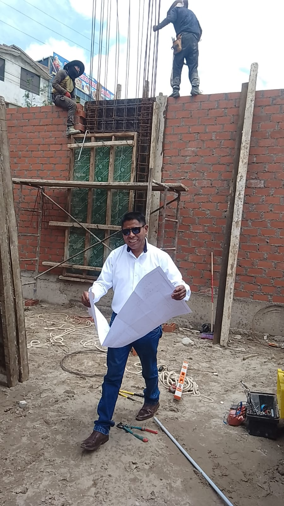
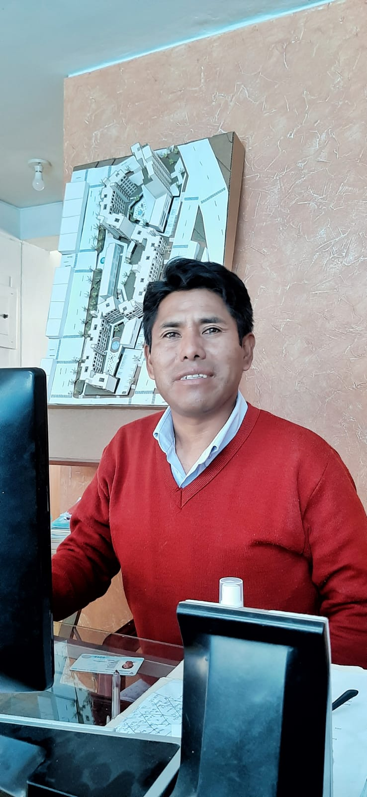
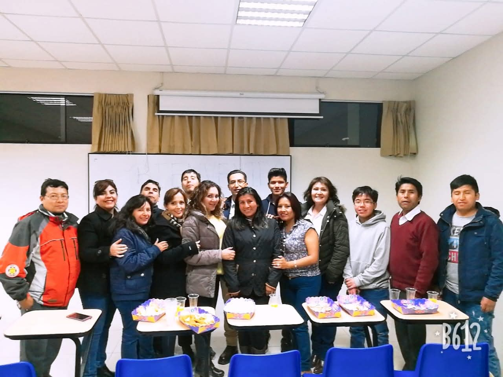
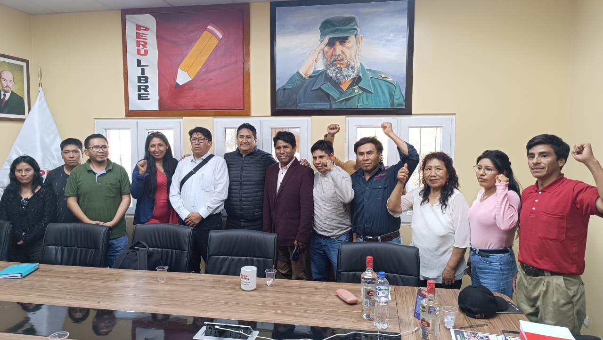
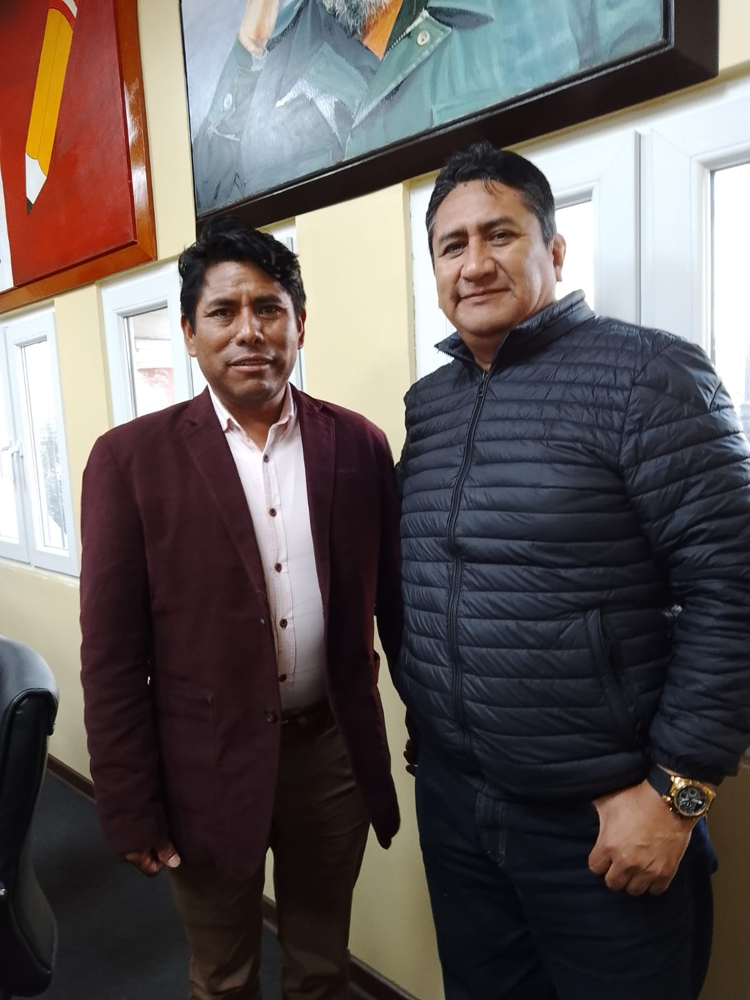
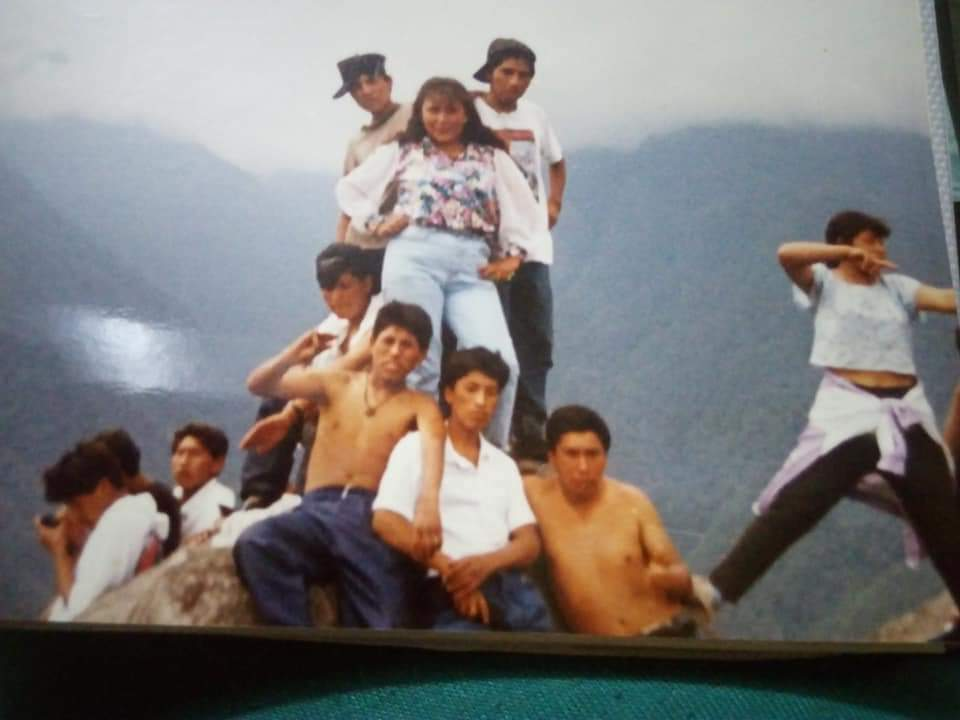
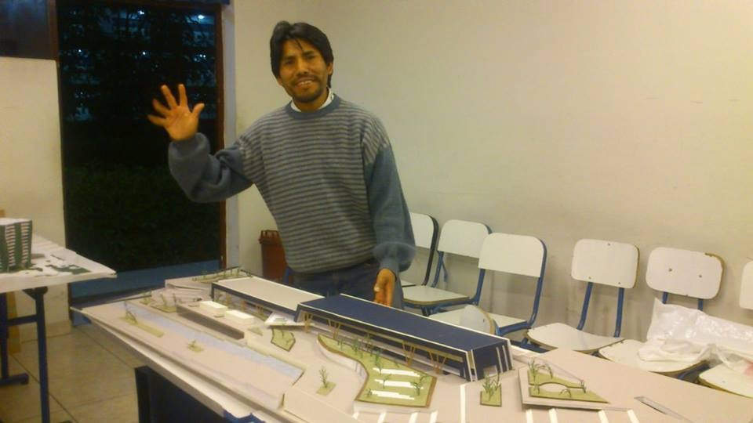

"Crecí en Pampachica, pueblo joven de Alto Selva Alegre. Mi padre falleció joven, aprendí el valor del trabajo desde muy niño. Estudié en el colegio Ludwig Van Beethoven, me dediqué a la construcción civil, formé una familia, estudié arquitectura. Hoy me postulo a la alcaldía — Domingo Suclle, unidad para servir."
Perú Libre • Elecciones Municipales 2026 • Alto Selva Alegre
Domingo Suclle Aragón Alcaldía de A.S.A. - Arequipa
Una propuesta nacida en el barrio, construida con trabajo y guiada por una sola convicción: "Unidad para Servir".
Una vida entera en Alto Selva Alegre
Nació y creció en Pampachica, Pueblo Joven Independencia. Desde pequeño aprendió que el esfuerzo, la familia y el servicio son la base para transformar una comunidad.
Infancia en Pampachica
Cuarto de seis hermanos, vivió de cerca el esfuerzo diario de su familia tras la pérdida temprana de su padre.
Formación escolar
Estudió primaria y secundaria en la I.E. Ludwig Van Beethoven N° 40029.
Trabajo y oficio
Construyó su trayectoria en el rubro de la construcción y arquitectura de proyectos
Familia y superación
Formó una familia mientras cursaba estudios universitarios de Arquitectura.
Experiencia técnica actual
Hoy trabaja como Agente Inmobiliario y Verificador SUNARP.
Compromiso 2026
Postula a la Alcaldía de Alto Selva Alegre para gobernar con unidad, transparencia y servicio.
Momentos de su trayectoria
Imágenes que muestran su camino: trabajo, formación, comunidad y compromiso con Alto Selva Alegre.







Conócelo en video
Mira y escucha de voz propia el mensaje de Domingo Suclle Aragón para Alto Selva Alegre.
6 pilares para transformar A.S.A.
Propuestas concretas para un distrito más ordenado, seguro, productivo y con oportunidades para todos.
Mejoramiento de vías, escaleras, drenaje y espacios públicos con enfoque técnico y mantenimiento sostenible.
Programas de formación, deporte y tecnología para potenciar habilidades y prevenir la violencia juvenil.
Intervenciones por zonas con juntas vecinales, priorizando seguridad, limpieza y recuperación de áreas comunes.
Impulso al emprendimiento vecinal, mercados más ordenados y promoción de empleo en coordinación con el sector privado.
Gestión responsable de residuos, arborización y educación ambiental para un distrito más saludable.
Municipio abierto, rendición de cuentas y participación ciudadana real en la toma de decisiones.
Valores que guían esta campaña
Trabajo
Disciplina y esfuerzo diario para cumplir resultados.
Familia
Protección y oportunidades para cada hogar del distrito.
Servicio
La función pública como vocación, no como privilegio.
Unidad
Gobernar con todos los vecinos, sin divisiones.
Alto Selva Alegre Merece Más
Este 2026, caminemos juntos con una sola fuerza vecinal. Súmate a la campaña de Domingo Suclle Aragón y construyamos una gestión con obras, honestidad y cercanía.
Unidad para Servir